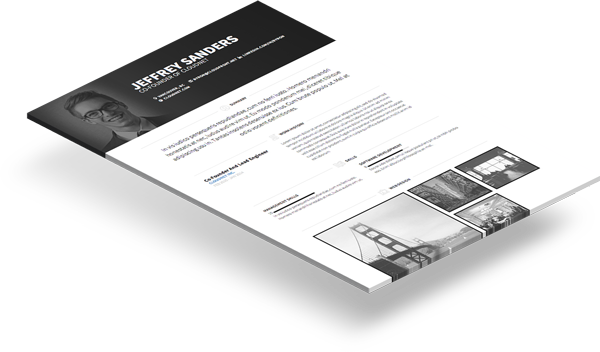
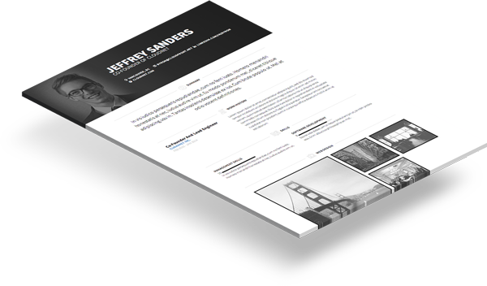

Hemen VisualCV Oluştur
Hemen VisualCV Oluştur
Kariyerini Baştan Yarat TEK TIKLA
Ücretsiz Kaydol.
Profesyonel özgeçmişler, online portfolyolar ve kişisel karşılama sayfaları oluşturun
 



Hayatımın işini ararken, 21. yüzyıla uygun bir özgeçmişe ihtiyacım olduğuna karar verdim. Elvada CV.doc! Merhaba @visualcv
En iyi online özgeçmiş oluşturma platformu! Çoklu özgeçmiş oluşturma, Özgeçmiş İstatistikleri, harika şablon tasarımları, hemen @visualcv pro'ya geçin ve CV'nizi oluşturun! Teşekkürler!
 @chris_michaeli
@chris_michaeli
LinkedIn'den daha fazlası! Yeni özgeçmişime bir göz atın! https://www.visualcv.com/karen-julius
Daima iş tanımına uygun özgeçmişiniz olsun.
İster online bir portfolyo, ister PDF özgeçmiş. VisualCV tasarım kütüphanesinde her zaman uygun tasarımı bulabilirsiniz.
Bütün VisualCV şablonları 6 saniye testini geçmek üzere tasarlanmıştır. İş başvurunuzu, iş görüşmesine dönüştürmenize yardımcı olur.
Kişisel websitenizi oluşturmanın en kolay yolu
Mobil görüntülemeye uygun ve arama motorları için optimize edilmiş olan VisualCV 'yi profesyonel kimliğiniz olarak kullanabilirsiniz.
Geleneksel iş başvuruları için tek tıkla özgeçmişinizin yüksek kaliteli PDF versiyonlarını oluşturabilirsiniz.

Özgeçmiş performansınızı takip edin
Nitelikli raporlama ve istatistik arayüzü sayesinde özgeçmişinizi kimlerin görüntülediğini takip edin. VisualCV açılan e-postaları, cv görüntülemelerini ve indirilmeleri takip ederek profesyonel özgeçmişinizin performansını izlemenize imkan verir.
Kişisel pazarlama departmanınızın olması gibi.

Guy Kawasaki
Risk Sermayedarı

Robert Scoble
Yazar

Charlie Garner
Profesyonel Futbolcu
Her kurumsal insan kaynakları personeli adayların VisualCV gelmesini arzu eder.

HEATHER GERMAN
İnsan Kaynakları SVP Lagan
VisualCV açık pozisyon ile ilgili farkındalık yaratmama ve pozisyonla ilgilenen adaylardan haber almama imkan verirken, VisualCV profillerine göz atarak görüşme öncesi kariyerleri hakkında geniş bilgi sahibi olmamı sağladı.

MICHAEL MARLATT
Danışman Microsoft
VisualCV'nin departmanımız çalışanlarına aday hakkında bir bakışta daha fazla bilgi vermesinin yanında, adayları hızlıca değerlendip şirketimize uygun nihai bireyleri bulmamıza olanak veriyor.

JAMES COLLINS
İşe Alım Müdürü Verisign
Ücretsiz Kaydol.